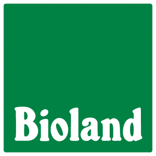

<mat-toolbar id="toolbar" color="primary">
    <div id="leftside">
        <button mat-button class="nav-button" routerLink="/">Bauernhof Schlüter</button>
        <button mat-button class="nav-button" routerLink="/ueber-uns">Über uns</button>
        <button mat-button class="nav-button" routerLink="/hof">Hof</button>
        <button mat-button class="nav-button" routerLink="/tierhaltung">Tierhaltung</button>
        <button mat-button class="nav-button" routerLink="/oekolandbau">Ökolandbau</button>
    </div>
    <span class="spacer"></span>
    <div id="rightside">
        <button mat-button></button>
    </div>
</mat-toolbar>